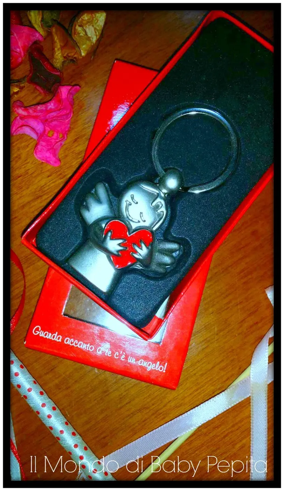
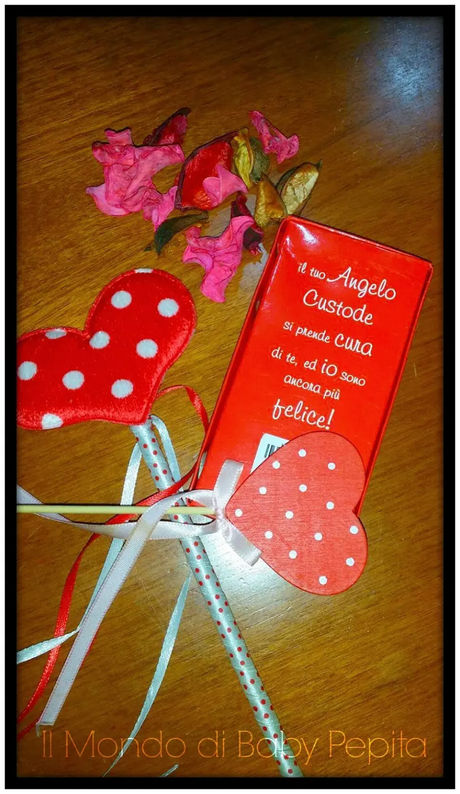

[GIVEAWAY] - un ringraziamento per voi!
Ciaoooo E' la prima volta che scrivo un post di questo genere, e questa volta non è per parlarvi o mostrarvi qualcosa ma bensì per ringraziarvi..e come posso farlo nel migliore dei modi?![Immagine dall'articolo «[GIVEAWAY] - un ringraziamento per voi!»](img/da065e0e72f5f8.webp)
Facendovi un pensiero (perchè di quello si tratta), un piccolo gesto per i miei followers.Sono molto contenta di scrivere questo post!
So bene che non siete molti a seguirmi e posso essere un piccolo puntino tra le migliaia di blogger in rete, ma sono comunque felice del risultato ottenuto finora.
Sembreranno parole di circostanza, ma davvero ci tengo tantissimo a ringraziare ognuna di voi per la fiducia che riponete in me seguendomi. Sapere che ogni tanto venite a sbirciare tra la pagina facebook ed il blog, spendendo parte del vostro tempo a leggere le mie chiacchiere, mi riempie di orgoglio!![Immagine dall'articolo «[GIVEAWAY] - un ringraziamento per voi!»](img/9325c1906c2052.webp)
Cerco sempre di non risultare mai pesante proponendovi articoli e prodotti non visti e rivisti in rete e ci metto davvero impegno nel fare foto, video quando servono e a spiegare nei dettagli così come se lo aveste voi tra le mani.
E' da tempo quindi che stavo pensando di creare un piccolo giveaway!
PS: voglio premettere che comunque questo contest sarà sì un ringraziamento ma anche una sorta di esperimenti per testare se sul blog funzionerà o sarà un flop, e soprattutto se sarò capace di gestirlo poichè è la prima volta qui, pertanto mi scuso se sarà solo un pensiero e non sarà uno di quei giveaway carichi di prodotti.
Vediamo come andrà questo magari nei prossimi mesi ne organizzeremo un altro più ricco!
Prima di andare alle regole per partecipare, voglio descrivervi brevemente il regalino per voi!
Non è un makeup e nemmeno un gioiello ma è un portachiavi portafortuna .
Perché ho pensato a questo accessorio?

Perché è un angioletto ed io credo negli angeli, in quest'avventura da blogger voi siete stati e siete ancora i miei angeli perché leggere i vostri commenti, i vostri messaggi privati mi fanno continuare a credere che questo blog può crescere e che non è speciale solo per me!

Andiamo ora alle poche regole per partecipare al giveaway.
Le regole sono 4 e sono tutte obbligatorie, pena l’esclusione:
- Essere fan della pagina facebook Il Mondo di Baby Pepita (indicandomi il nome col quale mi seguite nel commento.
- Essere lettori fissi di questo blog.
- Condividere questo post su facebook in modalità pubblica sul vostro profilo o sulla vostra pagina fan (potete farlo cliccando sull’icona di facebook alla fine dell’articolo appena prima dei commenti.
- Lasciare un SOLO commento sotto a questo post dove mi dite cosa apprezzate del blog, qual è il genere di articoli che preferite leggere oppure cosa vorreste leggere, insomma qualcosa inerente al blog.
La vincitrice verrà estratta tramite random.org
La vincitrice verrà contattata da me via mail, per essere avvisata della vincita. La vincitrice avrà 3 giorni di tempo dall'estrazione per rispondere alla mia mail, altrimenti procederò ad una nuova estrazione.
Non mi resta che augurarvi in bocca al lupo!
![Immagine dall'articolo «[GIVEAWAY] - un ringraziamento per voi!»](img/b3f706fa9e0809.webp)